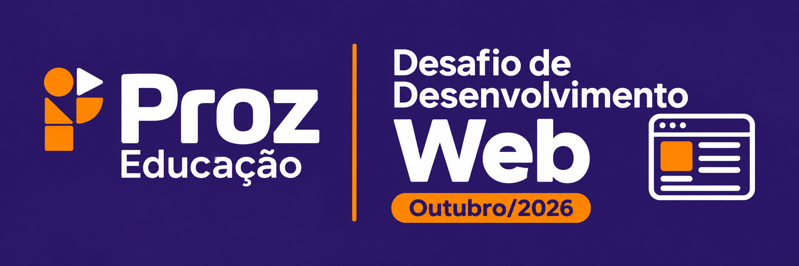

WebJornal
Criação de um jornal ou portal digital. O formato e os conteúdos ficam a critério do grupo — algumas ideias: notícias, entrevistas, matérias, agenda, artigos, entre outros.

Uma competição criada para estimular a criatividade, a prática e o aprendizado contínuo através da construção de soluções digitais.
Escolha o ponto de partida do seu projeto. As possibilidades são amplas e abertas:
Criação de um jornal ou portal digital. O formato e os conteúdos ficam a critério do grupo — algumas ideias: notícias, entrevistas, matérias, agenda, artigos, entre outros.
Desenvolvimento de uma experiência Web inspirada na temática. Algumas ideias: votação de fantasias, quiz interativo, mural de histórias, jogos rápidos, divulgação de eventos etc.
O grupo escolhe livremente o assunto, público e objetivo da aplicação. Pode ser qualquer solução Web: ferramentas úteis, dashboards, jogos, catálogos, sistemas ou o que a imaginação permitir.
Participação individual ou em grupos de 2 a 5 integrantes. O estudante pode participar como concorrente ou ouvinte.
Durante todo o período de criação, os tutores apoiarão os participantes (inclusive em conjunto) trazendo ideias, orientações, sugestões e templates.
Serão agendadas posteriormente com base na disponibilidade de todos, seguindo uma ordem e tempo delimitados para cada equipe.